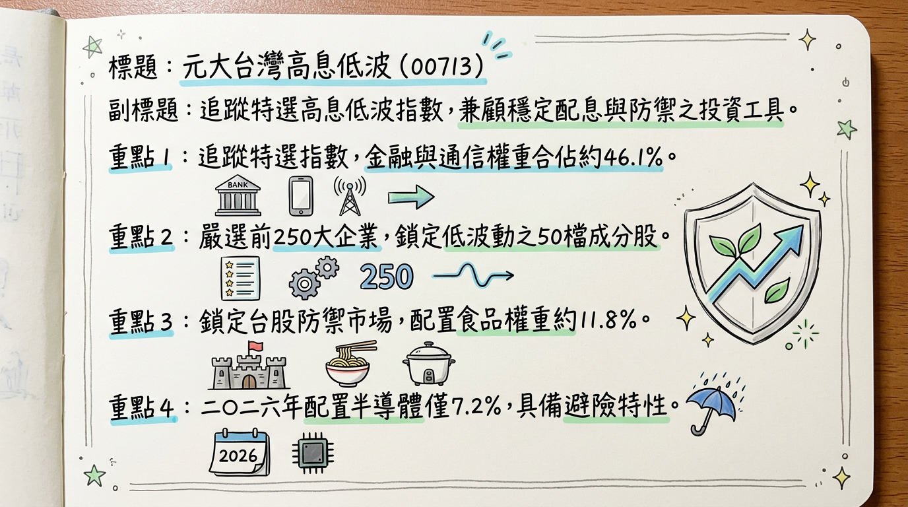
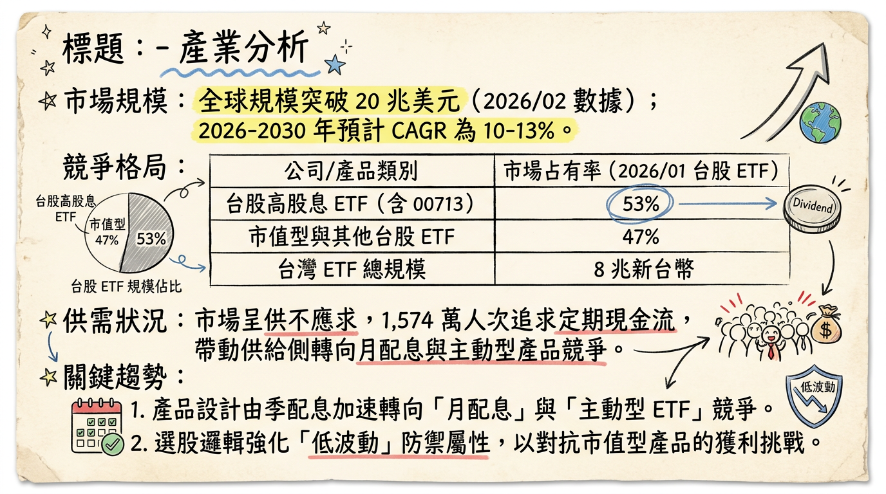
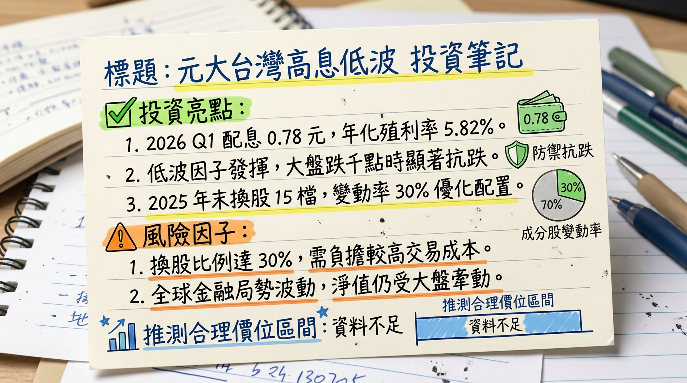

713 元大台灣高息低波 深度研究報告
一句話摘要
「台股震盪期的避風港」：00713 透過獨特的「低波動」與「高品質」因子篩選，於 2026 年成功轉向防禦性配置，在市場高檔震盪中展現極強的抗跌韌性與穩定的季度配息（0.78 元）。
公司概覽（ETF 結構與資產配置）
元大台灣高息低波（00713）是由元大投信發行的 Smart Beta ETF，追蹤「臺灣指數公司特選高股息低波動指數」。其核心邏輯是從台股市值前 250 大企業中，篩選出具備高股息、高 ROE 及低股價波動特性的 50 檔成分股。
【資產權重結構表】 (數據截至 2026/03/04)
| 產業類別 | 權重比例 (%) | 核心持股示例 | 功能定位 |
|---|
| 金融保險 | 25.7% | 第一金、華南金、群益證 | 提供穩定配息與防禦 |
| 通信網路 | 20.4% | 遠傳、台灣大 | 避險與穩定現金流來源 |
| 食品工業 | 11.8% | 統一、統一實 | 民生必需，抗景氣循環 |
| 半導體業 | 7.2% | 聯電、瑞昱 | 降低波動，保留適度成長 |
| 貿易百貨 | 6.9% | 遠百 | 內需復甦題材 |
| 其他（水泥、汽車等） | 28.0% | 亞泥、和泰車、裕民 | 傳產龍頭，價值防禦 |
核心競爭優勢
換股「金絲雀」機制：具備自動調節功能，於 2025 年底大幅減碼高估值的 AI 電子股，轉向防禦性標的，領先市場完成風險規避。
高品質因子篩選：成分股平均 ROE (權益報酬率) 維持在 15-20%，確保持股具備實質獲利能力而非僅靠題材支撐。
極致抗跌性：在 2026/03/04 台股重挫 1500 點時，跌幅顯著低於大盤與市值型 ETF，展現「低波」因子的價值。
收益平準金制度：截至 2026 年初，資本平準金約 21.76 元，收益平準金約 2.99 元，具備長期穩定配息的財務基礎。
財務分析（規模與配息趨勢）
作為 ETF，其經營績效反映在資產規模（AUM）與配息穩定度上。
【資產規模與配息趨勢表】
| 月份/季度 | 資產規模 (億新台幣) | 每單位配息 (TWD) | 年化殖利率 (預估) | 備註 |
|---|
| 2025/12 | 1,355 | 0.78 | 5.8% | 完成半年度換股 |
| 2026/01 | 1,248 | -- | -- | 資金流向市值型 ETF |
| 2026/02 | 1,251 | -- | -- | 受益人數趨穩 |
| 2026/03 | 1,253.77 | 0.78 | 5.82% | 公告 Q1 配息 |
- 2024 年（實際）： 全年配息 5.28 元，年化殖利率約 9.23%。
- 2025 年（實際）： 全年配息 4.06 元（1.4 + 1.1 + 0.78 + 0.78），年化殖利率約 7.7%。
- 2026 年（預估）： 第一季 0.78 元。若維持此節奏，年度總額約為 3.12 元。
法說會重點（成分股調整與管理層展望）
ETF 不舉行傳統法說會，依據元大投信 2026 年初公告之策略轉向：
- 策略重心： 鑒於 2025 年 AI 科技股波動放大，管理層已將資金由高波動半導體轉向 「穩定現金流」 標的。
- 具體調整（2025/12）： 汰換 15 檔成分股（週轉率 30%）。
*
新增： 亞泥、統一、和泰車、瑞昱、華南金、遠百、裕民等具備內需與穩定現金流企業。
* 刪除： 聚陽、仁寶、第一金、力成等已實現資本利得之標的。
- 管理層觀點： 2026 年為降息循環後的震盪期，配置重心將維持在 23% 以上的金融權重 與 20% 的電信權重 以防禦下行風險。
券商觀點（評等整理）
針對 00713，券商主要評估其填息能力與防禦價值。
【券商投資評等表】
| 券商名稱 | 日期 | 目標價區間 | 評等 | 展望說明 |
|---|
| 玩股網分析 | 2026/01/07 | 52.0 - 56.0 | 穩定抗跌 | 配息已落底，2026 年回歸平穩軌道。 |
| 經濟日報/法人 | 2025/12/01 | 51.5 - 55.5 | 築底完成 | 防禦性質隨類股輪動轉強。 |
| Money101 | 2025/11/30 | N/A | 優於大盤防禦力 | 年化報酬穩定，空頭市場首選。 |
財報深度分析（成本與效率指標）
【營運成本趨勢表】
| 項目 | 數據指標 | 趨勢分析 |
|---|
| 內扣總費用率 | 0.86% ~ 1.01% | 較 2024 年微幅上升，主要受換股週轉影響。 |
| 經理費 | 0.30% | 規模穩定於 50 億以上，適用最低費率。 |
| 保管費 | 0.035% | 維持穩定。 |
| 成分股週轉率 | 30% (2025/12) | 展現積極的風險控管與策略調整。 |
- 資本分析： 截至 2026 年 3 月，基金淨值組成中，包含顯著的資本利得（21.76 元），代表即便市場平淡，仍具備支撐 2-3 年穩定配息的能力。
股權異動（受益人趨勢）
- 受益人數： 2025 年 Q3 受縮息影響（1.1 降至 0.78），人數一度從 42 萬降至 34 萬，但 2026 年初因避險需求增加，受益人數止跌回穩，目前維持在 38 萬人 左右。
- 增減資狀況： ETF 透過初級市場申購進行規模變動，2026/02 出現微幅淨流入。
產業分析（競爭格局）
台灣高股息 ETF 市場於 2026 年進入「主動型 ETF」與「月配息」競爭夾擊期。
【台灣高股息 ETF 競爭比較表】
| 項目 | 00713 (元大高息低波) | 00878 (國泰永續高股息) | 0056 (元大高股息) | 00919 (群益台灣精選) |
|---|
| 2026 規模 | 1,253 億 | 4,419 億 | 5,271 億 | 4,259 億 |
| 核心技術 | 高息+低波動 (Smart Beta) | ESG+過去配息穩定 | 預測未來現金殖利率 | 宣告配息率精確選股 |
| 2025 報酬率 | ~12% (含息) | ~6.5% (含息) | ~11.8% (含息) | 波動度高於 00713 |
| 目標客戶 | 追求防禦、退休族 | 穩定領息大眾 | 穩健投資族 | 追求超高息小資族 |
近期催化劑
- 利多： 2026/03/03 公告第一季配息 0.78 元，消除市場進一步縮息的疑慮。
- 利多： 全球地緣政治不穩與台股高檔震盪，帶動資金從「市值型」轉回「防禦型」。
- 利空： 若 2026 下半年 AI 題材再度全面噴發，00713 由於傳產權重高，績效可能落後於 0050 或純科技 ETF。
⭐ 成長動能時間軸
- 2025/12/16： 【戰略換手】 納入瑞昱、樺漢、和碩等 AI 延伸標的，佈局 2026 年 AI PC 產能成長期。
- 2026/03/19： 【除息前夕】 Q1 配息 0.78 元最後買進日。
- 2026/03/20： 【除息交易】 考驗低波因子在波動市場中的填息速度。
- 2026/06/15： 【半年度審核】 預計將根據 2026 上半年企業財報再次優化持股組合。
- 2026/Q3-Q4： 【降息效應】 若台灣央行跟進降息，成分股中的高股息特性將更具吸引力。
2026 展望（成長動能 vs 風險）
1.
配息穩定化： 預計 2026 年每季維持在 0.7-0.8 元，全年殖利率挑戰 6% 水準。
2. 避險資金回流： 市場恐高心理將推升低波動產品的 AUM 成長。
1.
牛市落後風險： 若盤勢進入無差別噴發期，00713 的低波特性將成為報酬率的「天花板」。
2. 殖利率競爭： 若其他月配息 ETF 透過收益平準金維持 10% 以上配息，00713 可能面臨資金吸力挑戰。
投資結論
定位： 00713 已從純高息產品轉型為 「核心配置防禦標的」，適合風險承受度中低的投資人。
買進訊號： 配息金額 0.78 元已確認「止跌回穩」，年化殖利率 5.8%-6% 具備長期吸引力。
填息預期： 受惠於 25% 的金融股權重，在 2026 年預期的降息環境下，填息能力優於純電子型 ETF。
建議操作： 建議於股價 51.0 - 53.0 元 區間分批佈局。
目標價區間建議： 短線支撐 51.0 元，中長期填息目標價 55.5 元。
本報告由 AI 自動產生，資料來源為公開網路資訊，僅供參考，不構成投資建議。產生時間：2026-03-05 09:37
📊 資訊卡


